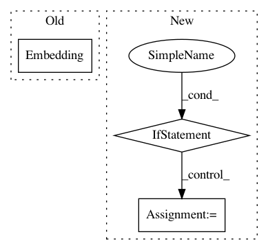

2858c7e09b0c1be5262de68a763dc42aa57fe710,ludwig/models/modules/sequence_decoders.py,SequenceGeneratorDecoder,__init__,#SequenceGeneratorDecoder#Any#Any#Any#Any#Any#Any#Any#Any#Any#Any#Any#Any#Any#Any#Any#Any#Any#Any#,32
Before Change
else:
self.vocab_size = self.num_classes
self.decoder_embedding = tf.keras.layers.Embedding(
input_dim=output_vocab_size,
output_dim=embedding_dims)
self.dense_layer = tf.keras.layers.Dense(output_vocab_size)
self.decoder_rnncell = tf.keras.layers.LSTMCell(rnn_units)
// Sampler
After Change
print("setting up attention for", attention_mechanism)
if attention_mechanism is not None:
if attention_mechanism == "luong":
self.attention_mechanism = LuongAttention(units=state_size)
elif attention_mechanism == "bahdanau":
self.attention_mechanism = BahdanauAttention(units=state_size)
self.decoder_rnncell = AttentionWrapper(self.decoder_rnncell,
self.attention_mechanism,
attention_layer_size=state_size)
In pattern: SUPERPATTERN
Frequency: 3
Non-data size: 3
Instances
Project Name: uber/ludwig
Commit Name: 2858c7e09b0c1be5262de68a763dc42aa57fe710
Time: 2020-05-06
Author: jimthompson5802@gmail.com
File Name: ludwig/models/modules/sequence_decoders.py
Class Name: SequenceGeneratorDecoder
Method Name: __init__
Project Name: OpenNMT/OpenNMT-py
Commit Name: 5972cb1690cafd70c2d1ef36c42707ec36e05276
Time: 2017-07-04
Author: sasha.rush@gmail.com
File Name: onmt/Models.py
Class Name: Decoder
Method Name: __init__
Project Name: uber/ludwig
Commit Name: e9aea97df1dc7878827ac193ba75cbea0b3ee351
Time: 2020-05-05
Author: jimthompson5802@gmail.com
File Name: ludwig/models/modules/sequence_decoders.py
Class Name: SequenceGeneratorDecoder
Method Name: __init__